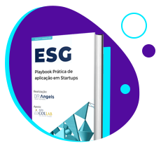

Já anota na agenda: 5 de outubro, às 17h30, uma grande oportunidade de captar investimento e se conectar com uma das big four consultorias do mundo.
#6
Não queremos ir para o spam! =( selecione este email como “confiável” ou mova-o para a Caixa de Entrada.
Guarde esta data: 5 de outubro de 2021
Lembra que na WE Impact News #4 anunciamos o investimento de R$ 1 milhão da KPMG na WE Impact? Chegou a hora de destinar esse capital a startups fundadas e lideradas por mulheres!
Mesmo conhecendo seus inúmeros benefícios, muitas pessoas ainda possuem dificuldade em fazer contatos e gerir sua rede.
Por isso, convidamos a presidente do LIDE Futuro (grupo de networking de empreendedores e líderes), Laís Macedo, para compartilhar dicas valiosas que vão te ajudar durante esse processo - incluindo como lidar com a síndrome da impostora e outros obstáculos enfrentados por mulheres na hora de fazer netowrking.
título lista JSON
texto lista JSON
texto lista JSON
texto lista JSON
texto lista JSON
#DiversidadenaPrática
Título JSON

Analisando 100 fundos de Venture Capital nos EUA, o relatório Diversity in U.S. Startups 2020 mostrou que os avanços em tornar essas empresas mais diversas no país não foram tantos quando gostaríamos nos últimos 8 anos.
A partir do estudo de mais de 3 mil empresas e cerca de 7,7 mil fundadores que participaram de mais de 4 mil rodadas, aqui estão alguns números levantados:
Só 3% das companhias avaliadas tinham pelo menos 1 fundador negro, e apenas 1.7% do total dos fundadores eram negros – sendo a maioria homens (85%)
E pouco mais de 3% tinham pelo menos 1 fundador latino, com 1,3% de todos os fundadores se encaixando nesse grupo, no qual a participação feminina não chega a 7%
- Juliana Innecco, Head de Inovação do Torq Labs e Dealflow Leader na Sinqia
#NaMídia
Perdeu esse conteúdo?
Se você tem dificuldade de separar a vida pessoal do horário de trabalho no home office, você não está sozinha(o) - 40% dos brasileiros compartilham esse desafio com você. No nosso Instagram, compartilhamos um checklist que pode te ajudar a “desconectar” após o expediente.
#NasRedes
Perdeu esse conteúdo?
Se você tem dificuldade de separar a vida pessoal do horário de trabalho no home office, você não está sozinha(o) - 40% dos brasileiros compartilham esse desafio com você. No nosso Instagram, compartilhamos um checklist que pode te ajudar a “desconectar” após o expediente.